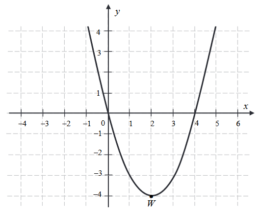
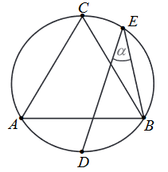
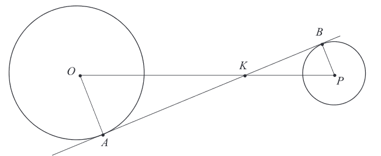
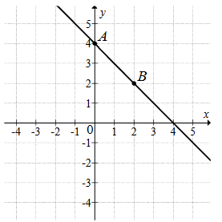
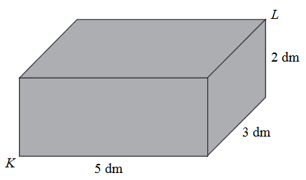
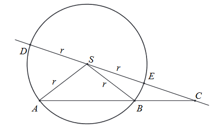
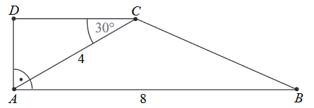
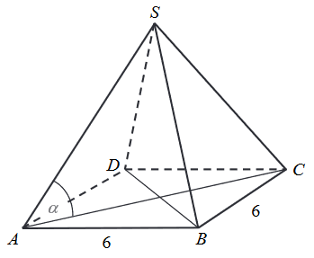

Matura 2019 maj
Liczba \(\log_\sqrt{2}2\) jest równa
A.\( 2 \)
B.\( 4 \)
C.\( \sqrt{2} \)
D.\( \frac{1}{2} \)
Liczba naturalna \(n=2^{14}\cdot 5^{15}\) w zapisie dziesiętnym ma
A.\( 14 \) cyfr
B.\( 15 \) cyfr
C.\( 16 \) cyfr
D.\( 30 \) cyfr
W pewnym banku prowizja od udzielanych kredytów hipotecznych przez cały styczeń
była równa \(4\%\). Na początku lutego ten bank obniżył wysokość prowizji od wszystkich kredytów o
\(1\) punkt procentowy. Oznacza to, że prowizja od kredytów hipotecznych w tym banku zmniejszyła się
o
A.\( 1\% \)
B.\( 25\% \)
C.\( 33\% \)
D.\( 75\% \)
Równość \(\frac{1}{4}+\frac{1}{5}+\frac{1}{a}=1\) jest prawdziwa dla
A.\( a=\frac{11}{20} \)
B.\( a=\frac{8}{9} \)
C.\( a=\frac{9}{8} \)
D.\( a=\frac{20}{11} \)
Para liczb \(x = 2\) i \(y = 2\) jest rozwiązaniem układu równań \(\begin{cases} ax
+ y = 4 \\ -2x + 3y = 2a \end{cases}\) dla
A.\( a = -1 \)
B.\( a = 1 \)
C.\( a = -2 \)
D.\( a = 2 \)
\(a = 1\)
Równanie \(\frac{(x-1)(x+2)}{x-3} = 0\)
A.ma trzy różne rozwiązania: \( x = 1, x = 3, x = -2. \)
B.ma trzy różne rozwiązania: \( x = -1, x = -3, x = 2. \)
C.ma dwa różne rozwiązania: \( x = 1, x = -2. \)
D.ma dwa różne rozwiązania: \( x = -1, x = 2. \)
Miejscem zerowym funkcji liniowej \(f\) określonej wzorem \(f(x) = 3(x + 1) -
6\sqrt{3}\) jest liczba
A.\( 3 - 6\sqrt{3} \)
B.\( 1 - 6\sqrt{3} \)
C.\( 2\sqrt{3} - 1 \)
D.\( 2\sqrt{3} - \frac{1}{3} \)
\(2\sqrt{3} - 1\)
Na rysunku przedstawiony jest fragment paraboli będącej wykresem funkcji
kwadratowej \(f\). Wierzchołkiem tej paraboli jest punkt \(W = (2, -4)\). Liczby \(0\) i \(4\) to
miejsca zerowe funkcji \(f\). 
Zbiorem wartości funkcji \(f\) jest przedział
A.\( (-\infty , 0\rangle \)
B.\( \langle 0, 4\rangle \)
C.\( \langle -4, +\infty) \)
D.\( \langle 4, +\infty) \)
\(\langle -4, +\infty)\)
Największa wartość funkcji \(f\) w przedziale \(\langle 1, 4 \rangle\) jest równa
A.\( -3 \)
B.\( -4 \)
C.\( 4 \)
D.\( 0 \)
\(0\)
Osią symetrii wykresu funkcji \(f\) jest prosta o równaniu
A.\( y = -4 \)
B.\( x = -4 \)
C.\( y = 2 \)
D.\( x = 2 \)
\(x = 2\)
W ciągu arytmetycznym \((a_n)\), określonym dla \(n\ge1\), dane są dwa wyrazy:
\(a_1 = 7\) i \(a_8 = -49\). Suma ośmiu początkowych wyrazów tego ciągu jest równa
A.\( -168 \)
B.\( -189 \)
C.\( -21 \)
D.\( -42 \)
\(-168\)
Dany jest ciąg geometryczny \((a_n)\), określony dla \(n\ge1\). Wszystkie wyrazy
tego ciągu są dodatnie i spełniony jest warunek \(\frac{a_5}{a_3} = \frac{1}{9}\). Iloraz tego ciągu
jest równy
A.\( \frac{1}{3} \)
B.\( \frac{1}{\sqrt{3}} \)
C.\( 3 \)
D.\( \sqrt{3} \)
\(\frac{1}{3}\)
Sinus kąta ostrego \(\alpha\) jest równy \(\frac{4}{5}\). Wtedy
A.\( \cos\alpha = \frac{5}{4} \)
B.\( \cos\alpha = \frac{1}{5} \)
C.\( \cos\alpha = \frac{9}{25} \)
D.\( \cos\alpha = \frac{3}{5} \)
\(cos\alpha = \frac{3}{5}\)
Punkty \(D\) i \(E\) leżą na okręgu opisanym na trójkącie równobocznym \(ABC\)
(zobacz rysunek). Odcinek \(CD\) jest średnicą tego okręgu. Kąt wpisany \(DEB\) ma miarę \(\alpha\).
 Zatem
A.\( \alpha = 30^\circ \)
B.\( \alpha \lt 30^\circ \)
C.\( \alpha \gt 45^\circ \)
D.\( \alpha = 45^\circ \)
\(\alpha = 30^\circ\)
Dane są dwa okręgi: okrąg o środku w punkcie \(O\) i promieniu \(5\) oraz okrąg o
środku w punkcie \(P\) i promieniu \(3\). Odcinek \(OP\) ma długość \(16\). Prosta \(AB\) jest
styczna do tych okręgów w punktach \(A\) i \(B\). Ponadto prosta \(AB\) przecina odcinek \(OP\) w
punkcie \(K\) (zobacz rysunek). 
Wtedy
A.\( |OK| = 6 \)
B.\( |OK| = 8 \)
C.\( |OK| = 10 \)
D.\( |OK| = 12 \)
\(|OK| = 10\)
Dany jest romb o boku długości \(4\) i kącie rozwartym \(150^\circ\). Pole tego
rombu jest równe
A.\( 8 \)
B.\( 12 \)
C.\( 8\sqrt{3} \)
D.\( 16 \)
\(8\)
Proste o równaniach \(y = (2m + 2)x - 2019\) oraz \(y = (3m - 3)x + 2019\) są
równoległe, gdy
A.\( m = -1 \)
B.\( m = 0 \)
C.\( m = 1 \)
D.\( m = 5 \)
\(m = 5\)
Prosta o równaniu \(y = ax + b\) jest prostopadła do prostej o równaniu \(y = -4x +
1\) i przechodzi przez punkt \(P = \biggl( \frac{1}{2}, 0\biggl)\), gdy
A.\( a = -4\) i \(b = -2 \)
B.\( a = \frac{1}{4}\) i \(b = -\frac{1}{8} \)
C.\( a = -4\) i \(b = 2 \)
D.\( a = \frac{1}{4}\) i \( b = \frac{1}{2} \)
\(a = \frac{1}{4} i b = -\frac{1}{8}\)
Na rysunku przedstawiony jest fragment wykresu funkcji liniowej \(f\). Na wykresie
tej funkcji leżą punkty \(A = (0, 4)\) i \(B = (2, 2)\).  Obrazem prostej \(AB\) w symetrii względem początku układu
współrzędnych jest wykres funkcji \(g\) określonej wzorem
A.\( g(x) = x + 4 \)
B.\( g(x) = x - 4 \)
C.\( g(x) = -x - 4 \)
D.\( g(x) = -x + 4 \)
\(g(x) = -x - 4\)
Dane są punkty o współrzędnych \(A = (-2, 5)\) oraz \(B = (4, -1)\). Średnica
okręgu wpisanego w kwadrat o boku \(AB\) jest równa
A.\( 12 \)
B.\( 6 \)
C.\( 6\sqrt{2} \)
D.\( 2\sqrt{6} \)
\(6\sqrt{2}\)
Pudełko w kształcie prostopadłościanu ma wymiary \(5\) dm x \(3\) dm x \(2\) dm
(zobacz rysunek).  Przekątna
\(KL\) tego prostopadłościanu jest – z dokładnością do \(0,01\) dm – równa
A.\( 5,83\) dm
B.\( 6,16\) dm
C.\( 3,61\) dm
D.\( 5,39\) dm
B
Promień kuli i promień podstawy stożka są równe \(4\). Pole powierzchni kuli jest
równe polu powierzchni całkowitej stożka. Długość tworzącej stożka jest równa
A.\( 8 \)
B.\( 4 \)
C.\( 16 \)
D.\( 12 \)
D
Mediana zestawu sześciu danych liczb: \(4\), \(8\), \(21\), \(a\), \(16\), \(25\),
jest równa \(14\). Zatem
A.\( a = 7 \)
B.\( a = 12 \)
C.\( a = 14 \)
D.\( a = 20 \)
\(a = 12\)
Wszystkich liczb pięciocyfrowych, w których występują wyłącznie cyfry \(0\), \(2\),
\(5\), jest
A.\( 12 \)
B.\( 36 \)
C.\( 162 \)
D.\( 243 \)
\(162\)
W pudełku jest \(40\) kul. Wśród nich jest \(35\) kul białych, a pozostałe to kule
czerwone. Prawdopodobieństwo wylosowania każdej kuli jest takie samo. Z pudełka losujemy jedną kulę.
Prawdopodobieństwo zdarzenia polegającego na tym, że otrzymamy kulę czerwoną, jest równe
A.\( \frac{1}{8} \)
B.\( \frac{1}{5} \)
C.\( \frac{1}{40} \)
D.\( \frac{1}{35} \)
\(\frac{1}{8}\)
Rozwiąż równanie \((x^3 - 8)(x^2 - 4x - 5) = 0\).
\(x=-1 \lor x=2 \lor x=5\)
Rozwiąż nierówność \(3x^2 - 16x + 16\gt 0\).
\(x\in \left(-\infty ;\frac{4}{3}\right)\cup (4;+\infty )\)
Wykaż, że dla dowolnych liczb rzeczywistych \(a\) i \(b\) prawdziwa jest nierówność
\(3a^2 - 2ab + 3b^2 \ge 0\).
Dany jest okrąg o środku w punkcie \(S\) i promieniu \(r\). Na przedłużeniu cięciwy
\(AB\) poza punkt \(B\) odłożono odcinek \(BC\) równy promieniowi danego okręgu. Przez punkty \(C\)
i \(S\) poprowadzono prostą. Prosta \(CS\) przecina dany okrąg w punktach \(D\) i \(E\) (zobacz
rysunek). Wykaż, że jeżeli miara kąta \(ACS\) jest równa \(\alpha\), to miara kąta \(ASD\) jest
równa \(3\alpha\). 
Ze zbioru liczb \(\{1, 2, 3, 4, 5\}\) losujemy dwa razy po jednej liczbie ze
zwracaniem. Oblicz prawdopodobieństwo zdarzenia \(A\) polegającego na wylosowaniu liczb, których
iloczyn jest liczbą nieparzystą.
\(\frac{9}{25}\)
W trapezie prostokątnym \(ABCD\) dłuższa podstawa \(AB\) ma długość \(8\).
Przekątna \(AC\) tego trapezu ma długość \(4\) i tworzy z krótszą podstawą trapezu kąt o mierze
\(30^\circ\) (zobacz rysunek). Oblicz długość przekątnej \(BD\) tego trapezu. 
\(|BD| = 2\sqrt{17}\)
Ciąg arytmetyczny \((a_n)\) jest określony dla każdej liczby naturalnej \(n\ge1\).
Różnicą tego ciągu jest liczba \(r = -4\), a średnia arytmetyczna początkowych sześciu wyrazów tego
ciągu: \(a_1\), \(a_2\), \(a_3\), \(a_4\), \(a_5\), \(a_6\), jest równa \(16\).
Oblicz pierwszy wyraz tego ciągu.
Oblicz liczbę \(k\), dla której \(a_k = -78\).
\(a_1 = 26\) i \(k = 27\)
Dany jest punkt \(A = (-18, 10)\). Prosta o równaniu \(y = 3x\) jest symetralną
odcinka \(AB\). Wyznacz współrzędne punktu \(B\).
\(B = \left(20\frac{2}{5}; -2\frac{4}{5}\right)\)
Długość krawędzi podstawy ostrosłupa prawidłowego czworokątnego jest równa \(6\).
Pole powierzchni całkowitej tego ostrosłupa jest cztery razy większe od pola jego podstawy. Kąt
\(\alpha\) jest kątem nachylenia krawędzi bocznej tego ostrosłupa do płaszczyzny podstawy (zobacz
rysunek). Oblicz cosinus kąta \(\alpha\). 
\(\cos \alpha = \frac{\sqrt{5}}{5}\)